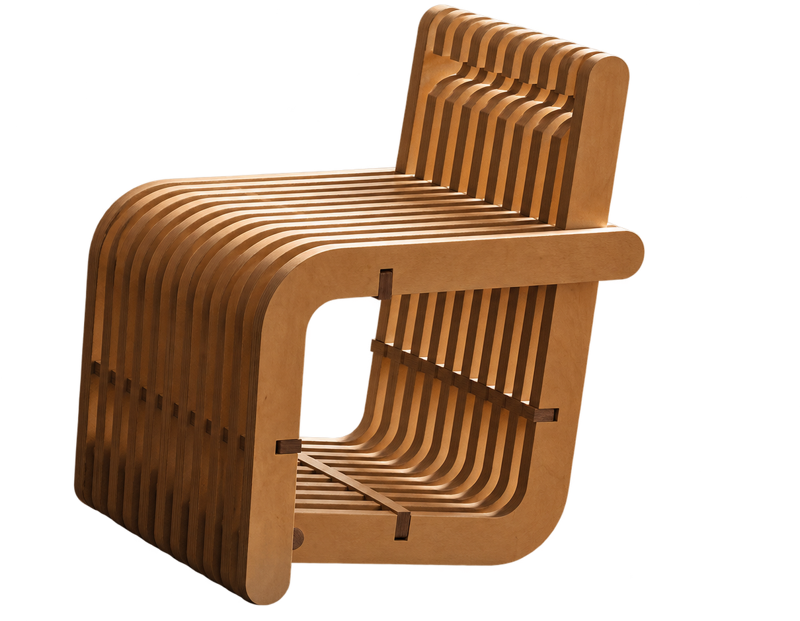
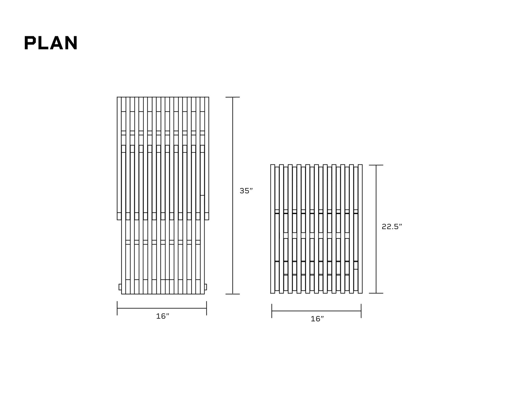
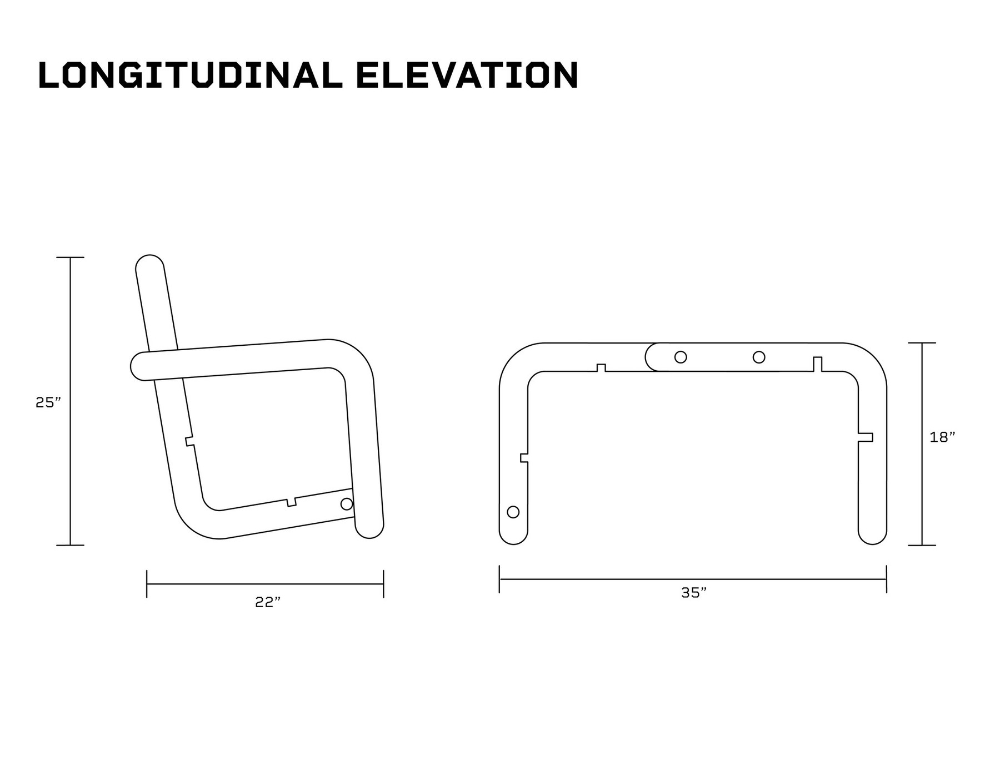
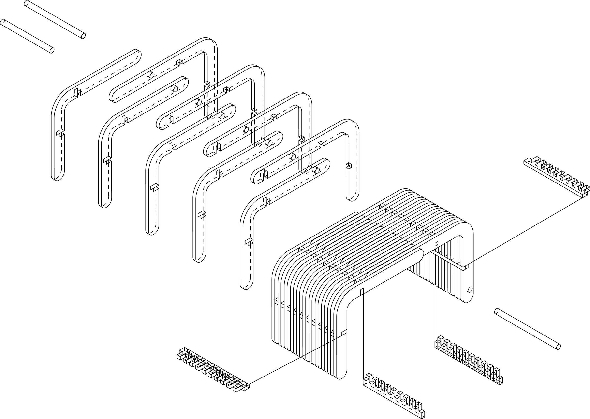
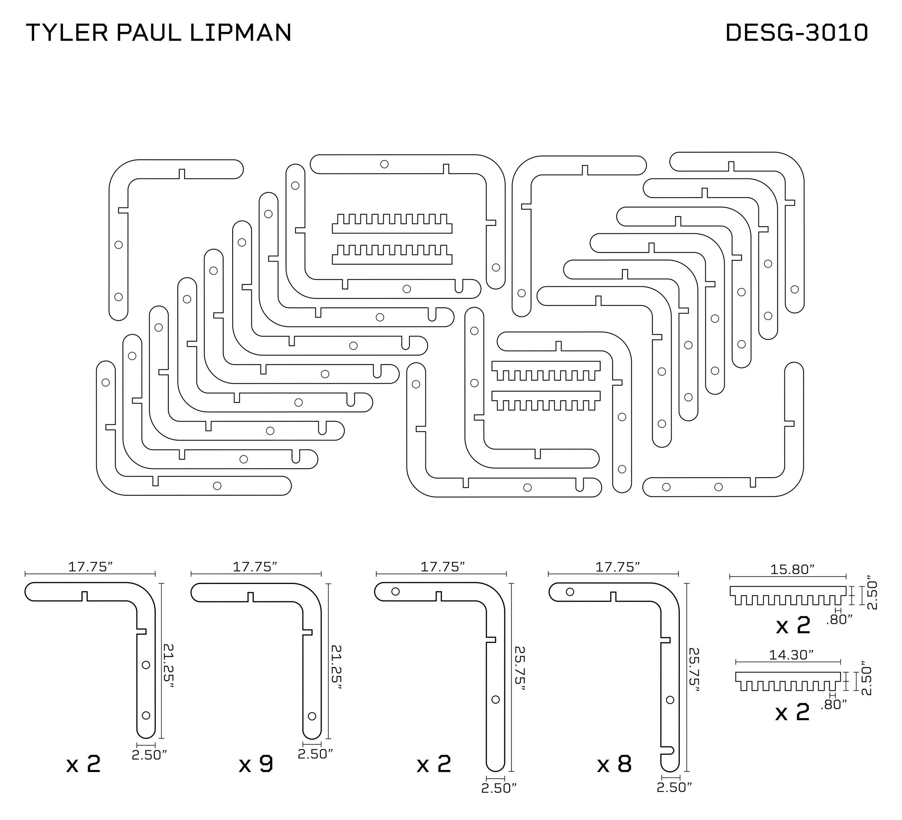
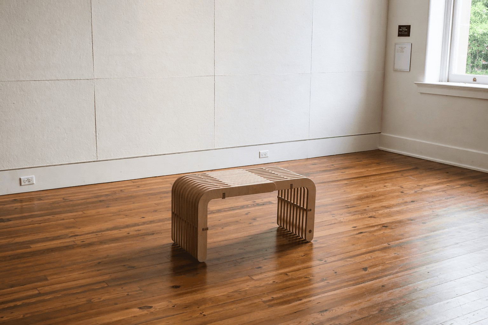
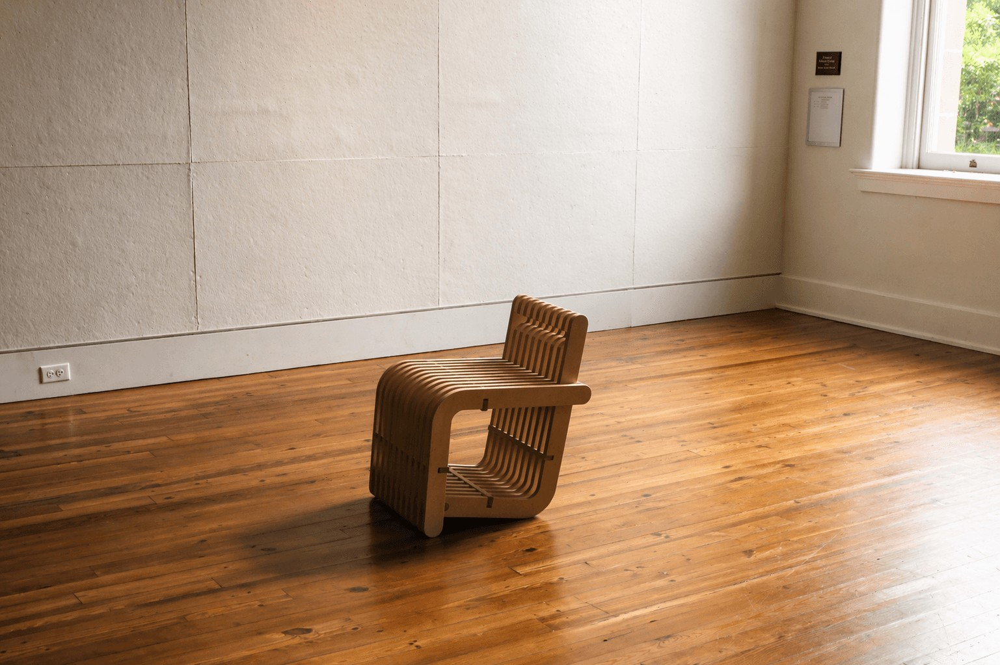

Bare
One plywood object. Two ways to sit.
- Year
- 2026
- Duration
- 2 months
- Context
- Prototyping studio
- Process
- Rhino 3D · CNC · Assembly

The project
Two uses.
One structure.
A chair and a bench built from one visible system of plywood slats, comb joints, and dowels.
The studio brief called for multifunctional seating made primarily from CNC-milled plywood. Bare uses a pivoting backrest to change how the same structure is used.
01 / Transformation
A backrest
that becomes a seat.
The back piece pivots around a dowel to change the profile of the object. A second connection holds the bench configuration. Keeping the mechanism exposed makes the relationship between movement and structure easy to read.
02 / Geometry
One profile.
Two configurations.
The plan and elevation drawings show how the same slatted structure changes between chair and bench. In plan, the repeated profiles form the seating surface; in elevation, the rotating back piece changes the silhouette.


03 / Fabrication
Flat parts.
Connected as a whole.
The exploded assembly shows how the plywood slats, comb connectors, and dowels fit together. The CNC cut plan translates that assembly into nested flat profiles, with the connection notches and holes integrated into each part.


04 / Finished piece
Construction
as expression.
The full-size piece brings the movement and joinery into one object. Material, connections, and transformation remain visible, so the way Bare is made also explains how it works.
Compare the chair and bench configurations.

